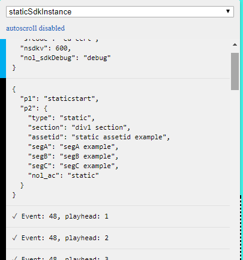

Browser Demo - Static (page) measurement
| Player |
n/a |
| Content |
static |
| Nielsen SDK version |
version 6.0.0 |
| Nielsen SDK impletentation |
DONE |
| certified |
..pending .. |
This is a static page example
NLS static measurement status :
DIV 1
foo foo foo - dummy content in DIV 1
Time spent 0
DIV 2
foo foo foo - dummy content in DIV 2
Time spent 0
HINT : Please use Chrome addon Nielsen Inspector to confirm Nielsen SDK API events
